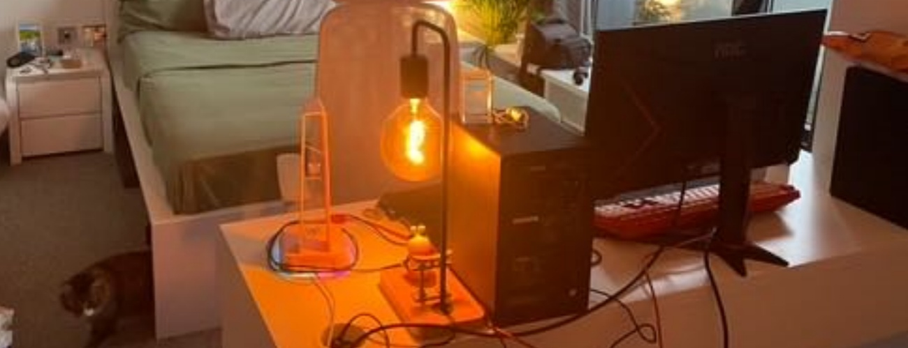

Dating App Normality Chapter III
If you’re not confident in yourself, who’s gonna do it for you?
It Be Like That
It's come to a point where I fully understand how dating apps work and start to blend in. I never input much emotion into this one and was constantly reminding myself "there's 90% of chance for him to ghost so... the only fun part is when you're expecting the date and living the date, the only thing you need to worry about is how you're gonna get dumped afterwards." The other thing I've learnt is that, whether they like you or not, people here are fake af, so they'll make the date perfect even if they are super disappointed in you. That's why I can so confidently say you can always expect a fun date. Both of these "morals", no doubt, were again proved true in the following story. Thank myself for telling me this in advance. And also, hope you have realized it is not LOML that we're looking for through this date. Judge as you want.Before we dive into this story, I would like to mention a short I saw yesterday. Check the video here if you’re curious enough. At least one thing I agree with is that our brain is designed to emotionally bond with the person you have sex with. So no matter how I reminded myself not to invest in this one, I guess I just have to somehow.
I’m A Jealous Bitch
This passage will contain every detail I still remember. So TL;DR: This guy has such a perfect, colorful, rich, privileged, amazing life that makes me so jealous and reflect on my own life every second.
He’s Spanish and French. Native speaker for English, Spanish, and French. Knows some Mandarin and Malay. He lives in a three-floor apartment with his roommate, whom he met back when he lived in Malaysia and has known each other for eight years. They each pay the same rent as I do, but they get a way bigger apartment wtf. That’s the difference between Bristol and Bath.
He has a cat Momo. Sometimes he calls her Momi. His roommate’s cat is named Soup. Both are girls. They are sooooo cute🥹Momo is super shy. Wouldn’t even let me get close to her. She has a cross on her forehead. Soup is more chill but doesn’t really let me touch her tho, escaping from me all the time.💔But ofc I managed to pet her a bit.
He studied BA Practical Filmmaking in MetFilm, graduated last year, and is planning to study 2D animation (or 3D, he said 2D was more difficult so he’s gonna study that I guess) next year. Currently being a freelancer, just doing whatever work he gets from Instagram as he posts some of his animation work there and people would approach to him sometimes.
There was a moment when I thought he was gay or bi cuz he talked with that hand gesture a lot😭or he was just being an european.
He said: My producer… Yes ofc he has a producer. Why not.
He said: I used to live in Beijing for some years and we always went to Lijiang for a trip. Beijing was so polluted at that time but Lijiang was like the opposite.
He said: My parents speak much better mandarin that I do. My sister speaks fluent Chinese too, because my family lived in China before I was born. Before I was born, they moved to Australia. And then we moved back to Beijing again, then Malaysia and Vietnam. When I was in uni, my family moved to Saudi Arabia.
He said: Yeah, my childhood was colorful, I’m a lucky boy and I’m grateful for that.
I mean I can be grateful too. What do I have:
<img src=”../images/empty.jpg>
He said: My madarin is so bad now. I used to have a Chinese tutor in Malaysia. She was such a nice person. She would bring me cake during my birthday every time.
He said: I used to have a tutor in Beijing, but it’s like a classroom for many students. Every time they cooked rice, I would rush there and screamed “我是很饿的” or “我是很饿了”. How do you say that?
When I said “Both are correct”, I actually meant “Both are wrong but I’m just too lazy to correct you. Dw we can understand.” And yes they ate rice with just rice.
He said: Because I have two passports, Spanish and French, but I got in the high school using the Spanish one, so I actually cheated the system. I had French test for my GCSE. When I was doing the foundation course, my teacher was not French so my French was actually better than hers. She would just let me sit on the side and give me some paper. “Finish these questions. Your classmates still need to learn, okay?” But when I was doing the higher course, my teacher was French. And she would always say, your French is so bad. You have problems here and problems there. I was like, oh finally. I also had Spanish test for IB, I didn’t take A-level. When I walked in for the Spanish exam, every one was like two years older than me. They were looking at me like, we’re taking an exam here, what are you doing here? I was like I’m taking the exam too. And I got the highest score obviously. My mom was so proud of me and I was like, mom, no, this is so embarrassing, this is basically cheating. What’s there to be proud of? My dad said, it would be embarrassing if you didn’t get the highest score. I was like, yes, exactly mom!
He said: My mandarin is so bad now. I need to get myself to practice agian. I said, “but you don’t have anyone to talk to… oh me!” He said with me, “you, yes!” And then he just randomly said some mandarin as he told his story. Just like how he said his drawing was terrible and then pulled up a great animated guy he drew. Que the fuck, dude.
I know. I just have a thing for polyglots, people. Don’t blame me for writing like ten paragraphs about him speaking three or more languages and cheating.
He spent the first hour explaining how his animation works were done and showed me the music he made with hilarious names like “fairly fart” and also all the music he listens to, including 你是我的玫瑰 by 庞龙. I said, “wtf whyyyyy.” He said, “what, is it an old person’s song? It’s such a good song, my dad used to sing it every day.” I mean it’s okay that dads listen to them… I also said these stuffs are sexy, he said he’s nerdy and called me asian. Technically he’s right. “But you’re super asian too. Look at the curtain outside your bedroom and the cat decoration on your bedside table, and the galss panda engraving.” He denied. I said, “what, what’s wrong with being asian? Woo, you’re a racist!”
His desktop has a logo in the middle and says “The Blue Planet” in a circle with an animated Momo in the middle. I thought The Blue Planet was his music name or brand or something, but all I get when I put it in Google is the documentary. I am that creepy sry. I search everything.
He said: My name is Ismael (he pronunced it as /isml/). It’s a common name in Spain. Every time I introduce myself to people from the mid east, they say “oh you’re jewish.” Cuz they thought it’s Ismail.
He said all the components for his computer were bought in Vietnam or Malaysia I forgot, because they were so cheap there. When we were going thru the security in the airport, they asked what were these inside my back and they said they had to take them out. I was thinking ofc, my name is Ismael, I’m flying from Vietnam and I have all these stuff in my bag.
He said: I’m such a nature guy. I like food and people in Spain more but the nature in France is so good. Like the scenery on the Apls, on the border of France and Switzerland, crazy. Have you ever been to Malaysia? Oh you definitely should. So many delicious food there, Chinese, Japnese, Malaysian, Singaporean, just everything. The food in Spain is amazing too and it’s so cheap too. (Meanwhile I was thinking, give me a fucking passport and I can live like that too😊And maybe it’s cheap because he speaks Spanish and is white) He recommended mee goreng mamak (which I tried the indo instant noodle version and it tasted terrible, maybe it would be different but how different can it be, I doubt.) and nasi lemak.(marking this just in case I go to these places someday)
I called him so French because he would randomly say Oh là là.
He said: Every time I hear someone on the street speaking a language I know, I would be like, oh🙂↔️🧐. The other time I heard someone speaking French, and I said, are you French? I’m French too! And he said, great! Do you wanna do some drugs? I was like, wtf, I just said I’m French too, and you’re inviting me to do drugs with you? Fuck no dude.
He said: I am more calm down after I moved here. I used to smoke weed a lot, but then I thought I need to quit. Now I only smoke cigarettes.
He said: What’s the most weird thing you’ve ever done. I said you go first. He said: When I was in London, I was walking on the street on night and this hooker walked towards me and asked, do you wanna fuck. So I just ended up having sex in the public, like literally in the public.
He said: One of my friends told me he tasted his girlfriend’s piss. I said, what does it taste like. He said, it tastes like piss I guess. “Yeah, but what does piss taste like?” “Well I didn’t ask.” “You should call him.” “Like rn? Yeah I would just call him and say hey, remember the time you said you drank your gf’s piss? I’m just really curious what it tastes like.”
He said: There was a time when a girl squirted all over my chest and I thought basically she just peed on me.
How confident is he? He’s 175cm or 5’9. Honestly he’s fashion style is so mid. His jacket was…like the one people wear in northeastern China in the winter. (If you know, you know.) He got a chain necklace. I guess it’s because he mainly listens to trap, that’s also why he mainly makes beats when he says he makes music. And the minute he walks inside the elevator, he would check himself in the mirror. I asked why, he said, idk, I just look so good, wow, sooooo good.
The only failure in his life is probably the toxic ex-girlfriend he talked about. He said when he was in the uni, he had a girlfriend who was so manipulative. She would say he did stuffs he didn’t actually do and made him feel crazy. Then he went back to visit his family for a week and realized he was not crazy, it was she who was the problem, and ended this 1 or 2-year long relationhsip. Another failure, if it counts, is that the flush button in his bathroom is so broken. Every time I pushed it, I broke and he had to fix it. I hesitated for like two hours when I had to poop because I had to push the button at least twice when I shit😊First time, you just have too; the second time, just to make sure. And he put te toilet paper the opposite direction like wtf. Ofc it should be under the roll! End of the conversation!
You Know I Always Learn Something From It
When I told him how challenging my program is and how not confident I am, he said, "It was the same when I was in uni: some are better than me, some are worse than me. But after graduation, those who were doing not so good may be doing better now than those top students, because they knew they had to work harder to catch up but those top students didn't. Be confident. You're gonna be fineeeee. If you're not confident in yourself, who's gonna do it for you?" I just can't get this out of my mind, even if he may be this confident because his family's rich and white.(sry white ppl but can you deny it. I'm not saying it's all because he's white but part of for sure)Also, he’s room and his life is just so perfect that I started to buy things on Amazon to decorate my room after I came back. Guess that’s the good side.